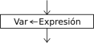

Asignación

La instrucción de asignación permite almacenar una valor en una variable.
<variable> <- <expresión> ;
Al ejecutarse la asignación, primero se evalúa la expresión de la derecha y luego se asigna el resultado a la variable de la izquierda. El tipo de la variable y el de la expresión deben coincidir.